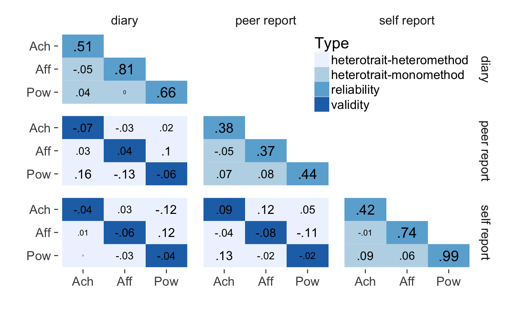

renders a MTMM using ggplot2. This function will split the variable names in a correlation matrix, or a data.frame. The first part will be used as the trait, the second as the method. Correlations are displayed as text, with the font size corresponding to absolute size. You can optionally supply a data frame of reliabilites to show in the diagonal.
mtmm(variables = NULL, reliabilities = NULL, split_regex = "_", cors = NULL)
| variables | data frame of variables that are supposed to be correlated |
|---|---|
| reliabilities | data frame of reliabilties: column 1: scale, column 2: rel. coefficient |
| split_regex | regular expression to separate construct and method from the variable name, splits on '.' by default |
| cors | you can also supply a (named) correlation matrix |
data.mtmm = data.frame( `Ach_self_report` = rnorm(200), `Pow_self_report` = rnorm(200), `Aff_self_report`= rnorm(200), `Ach_peer_report` = rnorm(200),`Pow_peer_report`= rnorm(200),`Aff_peer_report` = rnorm(200), `Ach_diary` = rnorm(200), `Pow_diary` = rnorm(200),`Aff_diary` = rnorm(200)) reliabilities = data.frame(scale = names(data.mtmm), rel = stats::runif(length(names(data.mtmm)))) mtmm(data.mtmm, reliabilities = reliabilities)